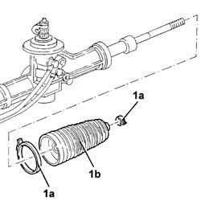

4130A20 Power assisted steering box BOOT (one), left or right - Replace at the bench
- Path
- Procedures > 41 STEERING > 4130 POWER ASSISTED STEERING > 4130A POWER STEERING BOX > 4130A20 Power assisted steering box BOOT (one), left or right - Replace at the bench
- Kind
- repair procedure (removal / refitting; the operation number is the code)
- Applies to
- all engines; all production periods
- Interactive page
- https://sloeber94.github.io/elrnDB-lThss/en/#/78766
Applies to: all engines; all production periods
 Removing
Removing
 Refitting
RefittingSee in Op. 4110B14 Steering RODS - R.R. with steering box removed
1. Loosen the bands (1a) and remove the power assisted steering box boot (1b).

Applies to: all engines; all production periods
Refitting
Removing- Place a new power assisted steering box boot in the housing and secure it using the bands.
See in Op. 4110B14 Steering RODS - R.R. with steering box removed